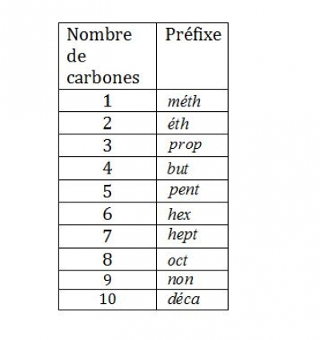
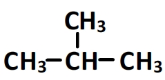
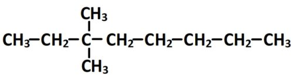
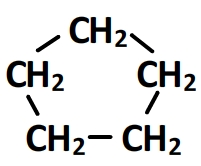
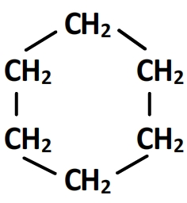

Les alcanes
Les membres de cette famille sont des espèces chimiques constituées uniquement d’atomes de carbone et d’hydrogène et ne possédant que des liaisons simples (pas de doubles ou triples liaisons).
La terminaison du nom d’un alcane est toujours en “ane” (par exemple méthane, éthane, propane, butane, 2-méthyl-pentane….)
Tableau des préfixes pour la chaîne principale

Alcane linéaire
Un alcane est dit linéaire si son squelette carboné est une chaîne, chaque carbone est lié au maximum à deux autres carbones.
Exemples d’alcanes linéaires :
- Le propane : CH3-CH2-CH2-CH3
- Le pentane : CH3-CH2-CH2-CH2-CH3
- L’octane: CH3-CH2-CH2-CH2-CH2-CH2-CH2-CH3
Alcane ramifié
Un alcane est dit ramifié si son squelette carboné ne se réduit pas à une simple chaine. On distingue alors une chaîne centrale (dite chaîne principale) et des ramifications (appelées substituants ou groupements alkyles). Dans un alcane ramifié certains carbones peuvent réaliser trois voire quatre liaisons avec d’autres carbones.
Exemples d’alcanes ramifiés :
- Le methylpropane 
- Le 3,3-dimethyloctane 
Alcane cyclique
Lorsqu’un alcane comprend un cycle (une boucle), c’est à dire un enchaînement de carbones qui se ferme sur lui même, alors on dit qu’il est cyclique. Le préfixe “cyclo” est mentionné dans son nom (cyclopentane, cyclohexane) etc….
Exemples d’alcanes cycliques :
- Cyclopentane 
- Cyclohexane 
Nommer les alcanes
- Repérage de la chaîne carbonée linéaire la plus longue, elle constituera la chaîne principale.
- Numérotation de la chaîne carbonée principale : Afin de déterminer la position de la ramification, on numérote les atomes de la chaîne carbonée. Si deux numérotations sont possibles, on choisit celle qui conduit à l'indice le plus bas pour la ramification.
- Composition de la ramification (nombre de groupe carbonyle).
- Nom complet de la molécule : Le nom complet fait apparaître dans cet ordre l'emplacement de la ramification, le nom de la ramification et le nom de la chaîne carbonée principale.